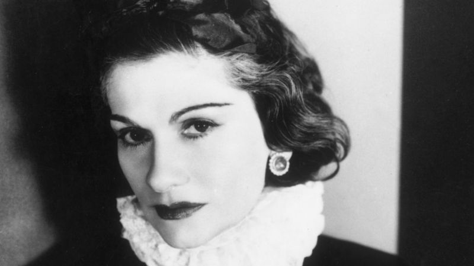

Gabrielle Bonheur "Coco" Chanel
1883-1971

Fashion designer and businesswoman
-
From science to one of the most iconic brands in the fashion world - Coco
Chanel was a woman who changed the face of fashion forever.
- She was born
in France and taught herself to sew at a young age - something that would
certainly come in handy later on!
- She opened her first shop in the early
1900s, starting off by designing hats. She soon turned her attention to
clothes too and, by the 1920s, launched her first perfume.
- Ever heard of
the saying the 'little black dress', also known as the LBD? Yep, you have
Coco Chanel to thank for that.
-
She led the way in luxury fashion and today
her brand - led by its creative director Karl Lagerfeld - sells clothes,
perfume, handbags and watches. Almost 100 years after it was first
created, Chanel No 5 is still probably the world's most famous perfume!
- All from one hat shop, Chanel is now worth billions of pounds, so it's
safe to say she had one heck of an impact!